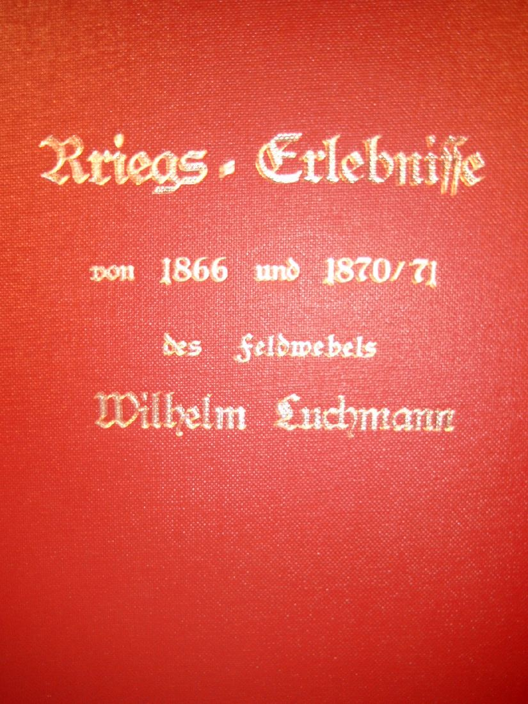
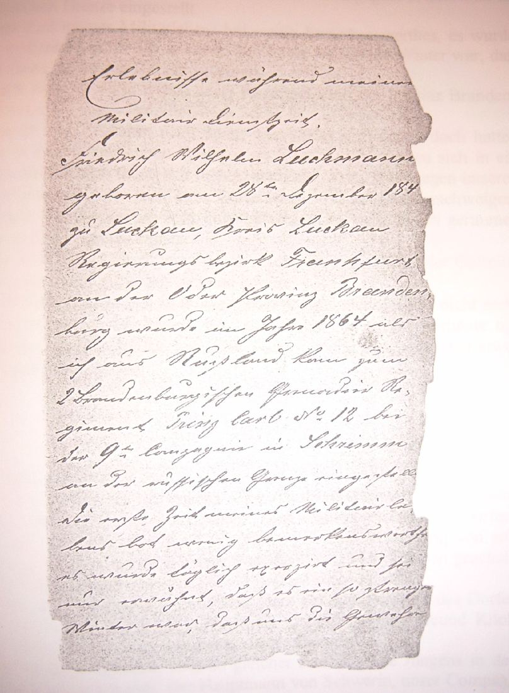
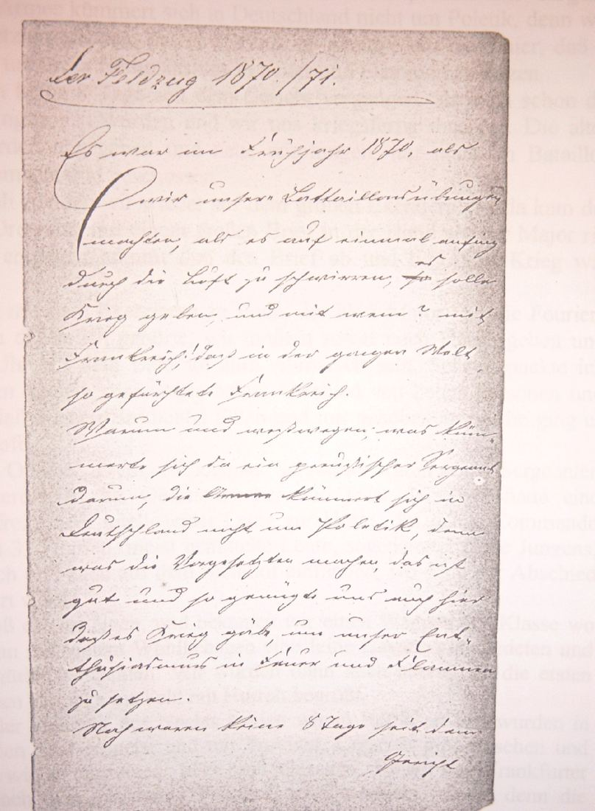
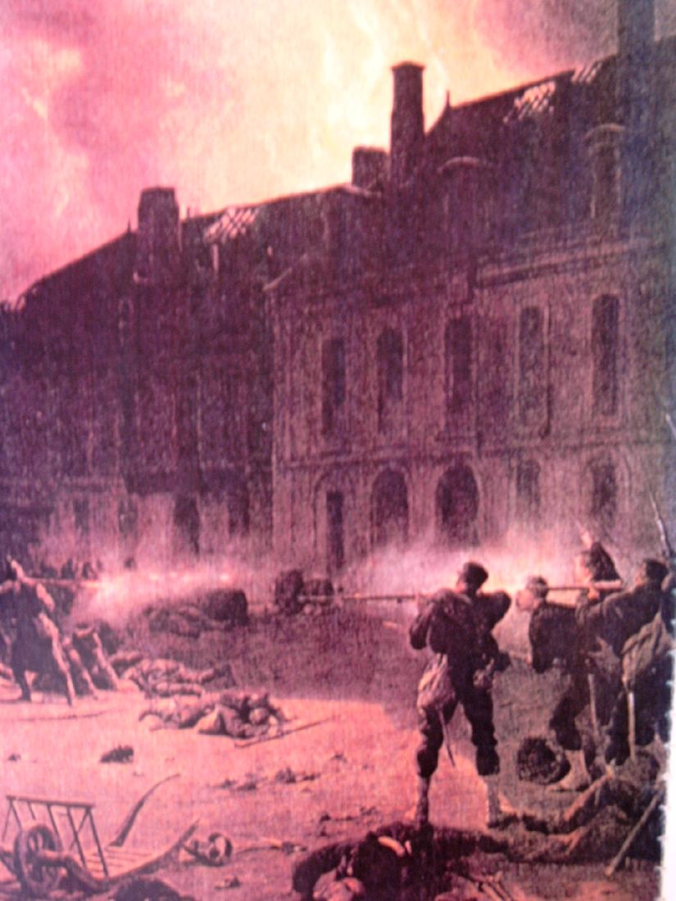
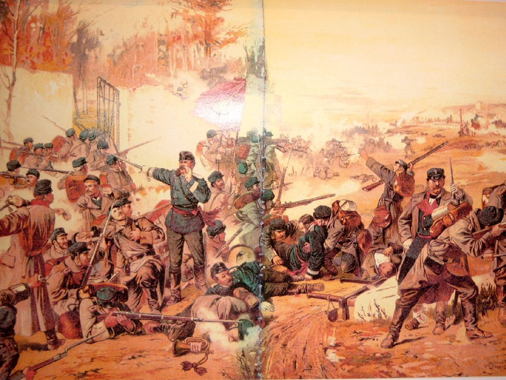

Luchmanns Aufzeichnungen sind kein tägliches Kriegstagebuch, sondern eine spätere Erzählung in deutscher Schrift. Seine Familie hat sie 1994 in lateinische Schrift übertragen, mit Karten und Erläuterungen ergänzt und binden lassen.




Die Chronik ordnet zwei farbige Gemälde den Marschrouten zu: „Belagerung von Metz (siehe Bild)“ und „Schlacht von Orleans (siehe Bild)“. Maler, Titel und Herkunft der Bilder nennt sie nicht; sie konnten nicht ermittelt werden. Ob die Bilder diese Ereignisse zeigen, ist deshalb offen.


Nicht übernommen wurden die beiden Karten der Chronik, eine Schulatlas-Karte zu 1866 und eine Straßenkarte zu 1870/71: Sie stammen aus gedruckten Atlanten. Die Karte dieser Website ist neu gezeichnet.
„… da tritt auch schon der König Wilhelm dicht neben mir und bleibt stehen, seine Suite hinter ihm.“
Brünn, 15. Juli 1866 (T S. 14)
„Da standen die Haare wie Besenreiser in die Höhe und das Testament war schon gemacht, doch Unkraut vergeht nicht.“
Reiterangriff bei Mars-la-Tour, 16. August 1870 (T S. 26)
„Kein Auge blieb trocken …“
Feldgottesdienst am Abend nach Mars-la-Tour (T S. 27)
„… welcher Contrast von vor 8 Tagen und heute, damals Braten, Kuchen, Wein die Hülle und Fülle und Sprungfederbett …“
Vendôme, 6. Januar 1871 (T S. 49)
Zitate in der Schreibung der Abschrift von 1994. Die Texterkennung des eingescannten Buchs kann einzelne Zeichen verfälscht haben; die Zitate sind mit dem Bild der Seite verglichen.